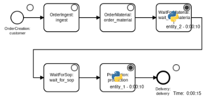
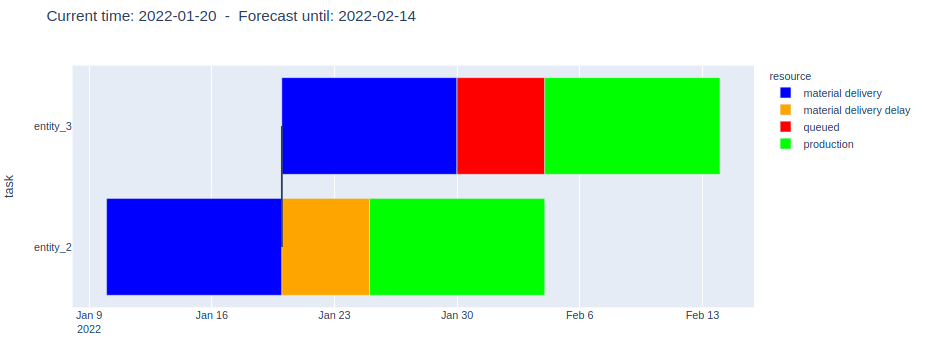

Real Time Simulation-based Supply Chain Analytics
Proof of concept using Casymda on AWS, ft. Terraform and LocalStack

In his highly interesting, recently published PhD thesis (German), Toni Donhauser from the University Erlangen-Nürnberg gives an excellent example on how a production-synchronous digital twin can be used for automated, simulation-based order scheduling in masonry plants.
As a core feature, the developed simulation allows to initialize the work-in-process of the manufacturing system to precisely mirror the current state and create accurate short-term forecasts, which serve as a basis for comparing alternatives and optimizing production plans in case of unexpected disruptions. Tecnomatix Plant Simulation (Siemens) is used for the implementation of the simulation model. Manufacturing data is fetched via the built-in OPC-UA interface from an OPC server and via ODBC from an MS Access database. Simulation runs can be triggered manually by an operator using a management application written in C#.
Since Plant Simulation is known for extensive features as well as for extensive licensing fees, this blog post will present an alternative implementation of such a production-synchronous digital twin, based on open-source frameworks and building on easy-to-operate, pay-per-use AWS infrastructure.
The complete setup can be deployed and tested locally using Docker, LocalStack and Terraform (no AWS account required).
Get the repo from github:
https://github.com/fladdimir/csa-simulation-based-sc-forecast
Scenario & Scope
The chart below shows a fictive and simplified order manufacturing process, serving as a minimal example to illustrate how a digital twin of the system can be implemented.
After being created, orders are received and accepted by the company (“ingest”-step), and the order-specific raw material is ordered (“order_material”), leaving the order waiting until the corresponding material arrives (“wait_for_material”).
When the material is delivered, the order proceeds to a queue (“wait_for_sop”), waiting to be processed in a capacity-constrained “production”-step, which is only able to process one order at a time.
Eventually, the finished order gets delivered to the customer and leaves the system.
Whenever material for an order is requested, an initial estimated time of arrival (ETA) is assigned. However, unexpected supplier-specific process deviations or other delivery problems may introduce delays at any point in time, so that ETA-updates are possible during this step. Since the production step uses a capacity-constrained resource and represents a possible bottleneck of the system, any unplanned under-utilization here may delay every upcoming order and diminish the system throughput (depending on how tight the schedule looks like). Therefore, it is desirable to be able to quantify the effects of any shift in time as soon as an ETA-update for an order occurs.
Synchronized Digital Twin: Concept and Implementation
The next figure shows a simple event-processing pipeline, able to ingest defined events and to persist the system state (event tracking), which in turn enables the simulation-based creation of forecasts for expected order completions times and delays (event analytics). A simple web-dashboard will be used to visualize the results.
1. Publishing events of data producers
During the processing of an order in the physical system, data producers such as sensors and IoT-devices are capturing information on the progress, i.e. events of state-changes as e.g. start or finish of the production step of an order. These order updates are published to a defined endpoint where they are collected and processed (2.). While those events would actually be happening in the physical manufacturing system, a simulation model might be used to create test-data for the digital twin (see the post on Virtual Commissioning for another example of this use-case for simulation).
2. Capturing events with AWS Kinesis
Kinesis is an AWS service for continuous buffering and real-time processing of streaming data.
A Kinesis stream decouples data producers and consumers and consists of a configurable number of shards, each of which is able to ingest up to 1 MB or 1000 records of data per second.
Each record is put into one shard based on it’s specified partition key value, which gets important since in-order processing of records is
guaranteed only on partition key level.
In the described scenario in-order processing becomes critical for ETA-updates of orders, since the message of an expected delay must not be processed before an earlier submitted update.
New records can be put to the stream e.g. using the AWS SDK, which is available for various languages, including Python which is used for the emulated test client.
3. Processing events with AWS Lambda
Lambda is the function-as-a-service offer of AWS, which allows to run code on-demand, paying for the number of invocations as well as for execution time.
Lambda functions can easily be integrated with other services such as SQS and DynamoDB.
Since AWS provisions the function runtime on-demand, the short cold-start times of NodeJS and Python make them a popular choice for implementing lambdas, while “heavier” alternatives such as Java are less common (the JVM would need multiple invocations for the JIT-compilation to boost performance).
The lambda implemented for processing order updates is simple and just updates the corresponding item of the affected order in a specified DynamoDB table with data from the event provided as part of the invocation.
4. Persisting the system state with DynamoDB
DynamoDB is used as a fast, flexible and managed NoSQL database. While this type of database by design lacks some of the amenities of relational databases (such as proper means to enforce referential integrity on the database level, or the availability of sophisticated ORMs and schema management tools), it is fine for our simple use-case which just involves updating single items and basic queries. DynamoDB requires a hashkey and optionally a partition key, both of which are used in combination to uniquely identify a stored item. For orders the string id can be used as the hashkey. A nice feature of DynamoDB is the option to enable streams, automatically providing information on table-updates. This way, order ETA-updates can trigger new forecasts.
5. Simulating the future
AWS allows to use Lambda functions as DynamoDB stream event consumers, so that simulation runs can forecast future order completion times on every state change.
For each run, the complete system state is fetched from the DynamoDB (which might actually need multiple requests, since a single scan might only return a page of up to 1 MB of data).
Based on the registered process timestamps, the currently relevant process step of each order can be identified.
The simulation model is generated from the process diagram shown above using
Casymda.
For the sake of simplicity of this proof of concept, processing times are assumed to be deterministic (even though stochastic behavior could be easily modeled, it would require averaging multiple runs).
Model blocks are implemented to account for already elapsed processing time of work-in-process-entities at the start of the simulation (one of the possibilities to initialize online simulation models discussed in the often-cited paper of
Hanisch and Tolujew, 2005, further explored by
Hotz, 2007).
During the execution, forecast metrics are collected in form of predicted process step completion times.
Currently, AWS allows Lambda function executions to take up to 15 minutes, so that even complex models can be run this way.
However, frequent and long running calculations might make it more attractive to create a dedicated service.
6. + 7. Forecast persistence and visualization
At the end of each run, the gathered results are persisted in a second DynamoDB table, from where a dashboard application can access and visualize the data.
Plotly Dash is a popular framework for analytics web-apps.
It enables the quick creation of dynamic dashboards just by writing Python code.
Under the hood, it uses
flask to serve
React websites with
plotly charts to a browser.
Data queries and analysis are done on the backend using Python.
The implemented dashboard just contains a simple gantt-chart (and serves only as a very basic example, leaving lots of room for extension).
Automatic dashboard refreshes are implemented using an interval-callback to cyclically poll the database for updates.
A dashboard’s Docker container could be run on AWS (e.g. ECS/Fargate, but since the free version of LocalStack does not include this it will just be run locally for demonstration).
Result
To run the setup locally from within the cloned repository, Docker and Terraform need to be installed.
Even though the performance is not comparable to the actual cloud service,
LocalStack is an awesome option to serve a multitude of AWS services locally, including Kinesis, Lambda, and DynamoDB.
LocalStack can be started in a privileged Docker container, spawning more containers as needed, e.g. for executing Lambdas.
It can be started via:
docker-compose up localstack
Before the Lambda functions can be deployed, the function code and its dependencies need to be packaged:
docker-compose up package-ingest-lambda package-simulation-lambda
Terraform is a great and widespread tool which can automatically provision infrastructure resources described in configuration files (however, have a look at this article for a more nuanced analysis). To create all required resources, two terraform commands are needed:
cd terraform
terraform init # required once
terraform apply # enter 'yes' when prompted to confirm the changes (or use -auto-approve)
cd ../ # return to project root
(To prevent 404 errors when calling apply after a restart of LocalStack without calling terraform destroy, first delete the terraform.tfstate files next to main.tf.)
After the successfull creation, two more containers can be started - one serving the dashboard and one running a simulation model to emulate real event producers:
docker-compose up dashboard emulation
Before (re-)starting any test-run, the DynamoDB-tables need to be cleared:
docker-compose up truncate-tables
http://localhost:8050 should now show the empty dashboard, while http://localhost:5001 should show the generic Casymda web canvas animation controls. To enable automatic refreshes use the switch above the chart on the dashboard.
When starting the emulation, orders will be created at the source and flow through the defined process.
At the same time, the dashboard should update with a minor delay and visualize the completion times of the relevant process steps of all orders which are currently present in the system.
A vertical line in the chart indicates the point in time when the simulation run started and the forecast was created.
Sample flow
1. The first order is created
The simulation forecasts process step completion times as defined in the model:

2. The second order arrives and Order-1 production starts
The forecast does not show problems:
3. After some time, an ETA update for the Order-2 material delivery is communicated, and a delay of 1/3 is now expected

The forecast shows the announced delay (orange) and the expected shift of the production step of Order-2:
4. Order-1 is finished (and therefore excluded from the forecast), but now Order-3 arrives
The forecast reveals an upcoming problem! Caused by the capacity constraint of the production step (max. one order concurrently), the delay of Order-2 (orange) will also prevent to start the of production of Order-3 on time, even though the material is expected to be ready by then (red): 
5. When Order-2 is almost finished, a 4th order comes in
As the forecast shows, the delay of Order-2 will cascade and also affect Order-4:
Complete screen-cast:
While this was just a proof of concept and the presented example would have been easy to calculate by hand, there are plenty of improvements and extensions imaginable.
Looking at the scenario and business use-case, it would be interesting to add more complexity to the process, such as inventory for raw materials, and different replenishment strategies. Similarly, the impacts of stochastic or planned machine maintenance intervals might be evaluated. Another extension would be to incorporate targets into the process, such as order-specific due dates or throughput goals. This might then ask for additional optimization procedures to determine optimal production control policies (similar to the case presented in the thesis mentioned in the beginning of this article).
Interesting technical extensions include security aspects such as authentication and authorization of different data producing parties, as well as an integration of the IoT-related services of AWS, which might offer dedicated features to gather data with sensors and edge devices for the digital twin. Concerning the analytics of ingested event data, stream processing solutions such as AWS Kinesis Data Analytics might be useful to identify relevant patterns and trigger forecast and optimization runs only in case of critical process deviations.